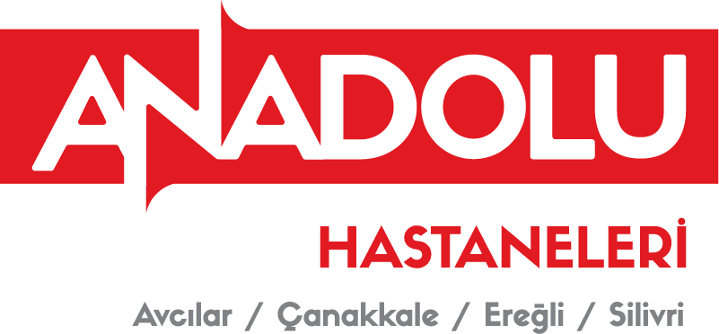
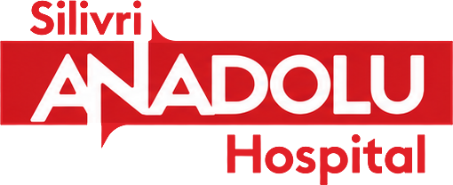
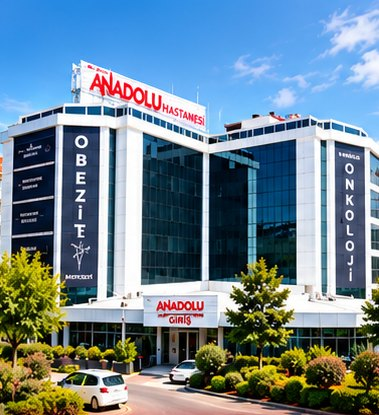
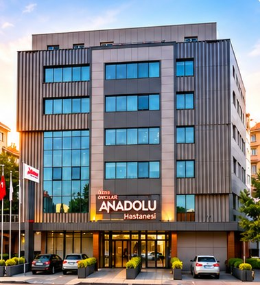
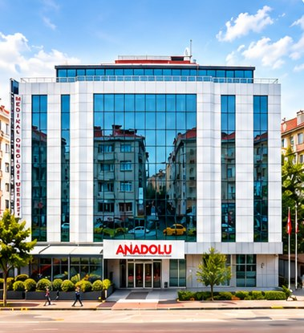
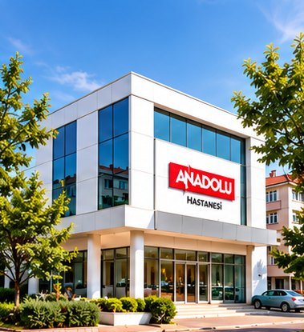
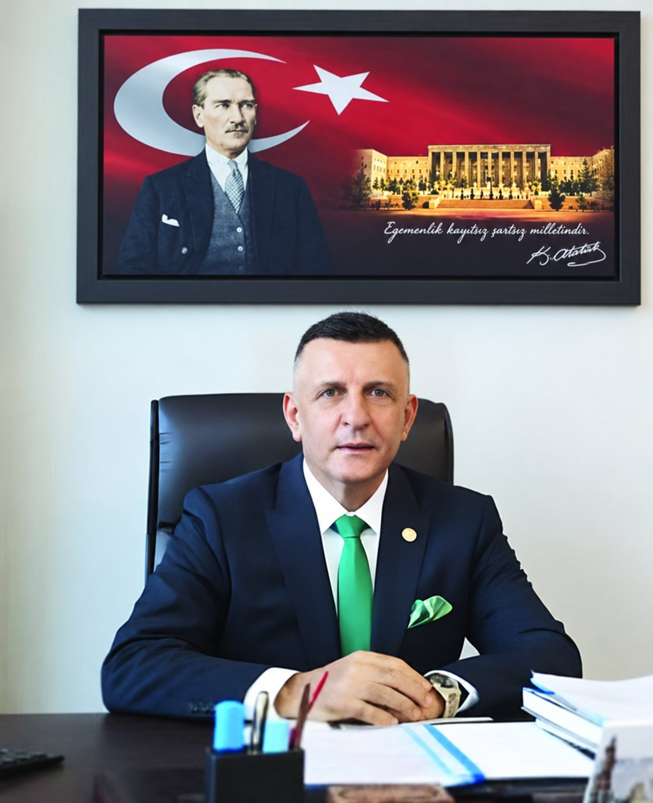
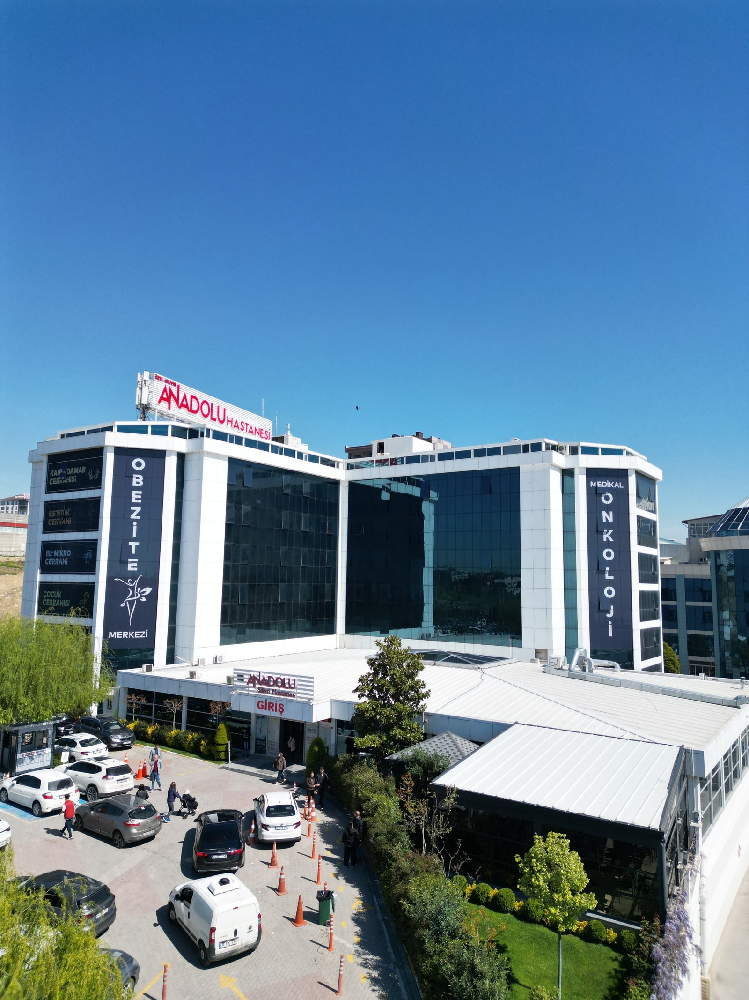

İki komşu, tek kalp
Sağlıkta dostluğun ve iyi komşuluğun köprüsü

Sağlık Hizmetleri Sunumu
“Her şey sağlığınız için”
Arkaz Holding
“Her şey sağlığınız için” — Bölgenin ilk akıllı hastane binası ve ileri sağlık hizmetleri.




İçerik Başlıkları
Arkaz Holding
Grup tarihi, vizyonu, faaliyet gösterilen 7 temel sektör ve kurucu liderlik.
Anadolu Hastaneleri
Avcılar, Çanakkale, Ereğli ve Silivri lokasyonlarıyla sağlık ağımız.
Grup Şirketlerimiz
Tarım, hayvancılık, gıda, catering, inşaat ve temizlik sektörlerindeki yatırımlar.
Silivri Anadolu Hastanesi
Teknolojik altyapı, akıllı bina mimarisi, kapasite ve stratejik öncelikler.
Klinikler ve Branşlar
38 tıbbi bölüm, 30 poliklinik ve yoğun bakım birimlerinin detaylı hizmet haritası.
İletişim ve Ulaşım
Lokasyon avantajı, havalimanı erişimi ve iletişim kanalları.
“Yıllardır Güvenle Geleceğe”
Sağlık, inşaat, tarım, hayvancılık, ulaşım, gıda, temizlik ve nakliye sektörlerinde hizmet veren; katma değer üretmeye ve istihdam sağlamaya kararlılıkla devam eden köklü şirketler grubu.

Özel hastanecilik anlayışımızı toplumsal fayda, ileri teknoloji ve insan odaklı hizmet ilkesi üzerine kurduk.
1957 yılında Sivas’ta doğan Dr. Hayati Arkaz, İstanbul Tıp Fakültesi mezunudur. 1991 yılında Avcılar Anadolu Hastanesi’ni kurarak Anadolu Sağlık Grubu’nun temellerini atmıştır. Sağlık sektöründeki köklü deneyimini girişimci vizyonuyla birleştiren Arkaz, TBMM 27. Dönem İstanbul Milletvekili olarak da görev yapmıştır. Arkaz Holding Yönetim Kurulu Başkanlığı görevini sürdürmektedir.
Anadolu Hastaneleri Grubu
Grup Şirketlerimiz ve İştirakler
HBA Tarım & Hayvancılık
Silivri ve Sivas Yıldızeli çiftliklerinde entegre üretim.
Z-Catering
Üniversiteler, kamu hastaneleri ve kurumsal şirketlere toplu yemek hizmeti sunan Türkiye’nin lider gıda üreticilerinden biri.
Karkas Et & Kebap
Bahçeşehir ve Rumeli Hisarı şubeleriyle premium et ve yenilikçi ocakbaşı konsepti sunan gastronomi markası.
Arkaz Gayrimenkul
Öz Anadolu, Öz Arkaz ve Ereğli Millet şirketleri bünyesinde modern sağlık binaları ve gayrimenkul projeleri.
Clean & Clean Hizmet Grubu
Hastane, AVM, okul ve otellerde uluslararası hijyen standartlarında entegre temizlik operasyonları.

Bölgenin ilk akıllı hastane binası — ileri teknolojik altyapı ile 7/24 kesintisiz sağlık hizmeti.
Rakamlarla Silivri Anadolu Hastanesi
“Etik ilkelerden ödün vermeksizin, uluslararası kalite standartlarında kesintisiz hasta memnuniyeti.”
Güncel tıp teknolojilerini entegre ederek, hasta haklarına saygılı ve çalışan güvenliğini odak noktasına alan sürekli iyileştirme anlayışı.
Uluslararası Sağlık Turizmi ve Hasta Hizmetleri
Cerrahi Tıp Birimleri
Gelişmiş ameliyathane altyapısı & laparoskopik cerrahi teknolojileri.
uzmanlık birimi
Dahili Tıp Birimleri
Kişiselleştirilmiş bütüncül tedavi & multidisipliner yaklaşım.
uzmanlık birimi
Tanı, Yoğun Bakım & Destek
7/24 kesintisiz sağlık hizmeti & ileri seviye tanı teknolojileri.
kesintisiz